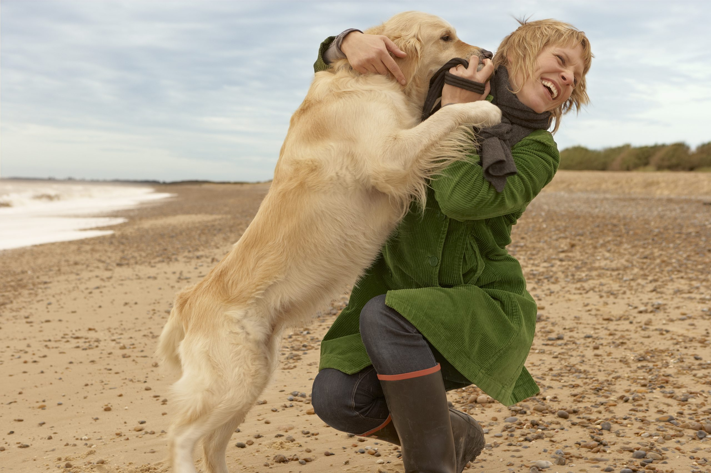

Dogs have wildly varying personalities, from extremely high energy, to low and chill.
High-energy
Many dogs seem to be born with more energy than an excitable child, always running around, jumping, licking, and playing. If that's your thing then this is the kind of dog for you!
Low-energy

On the other hand, many other dogs tend to be lazier, laying around, enjoying life in peace, and being adorable.